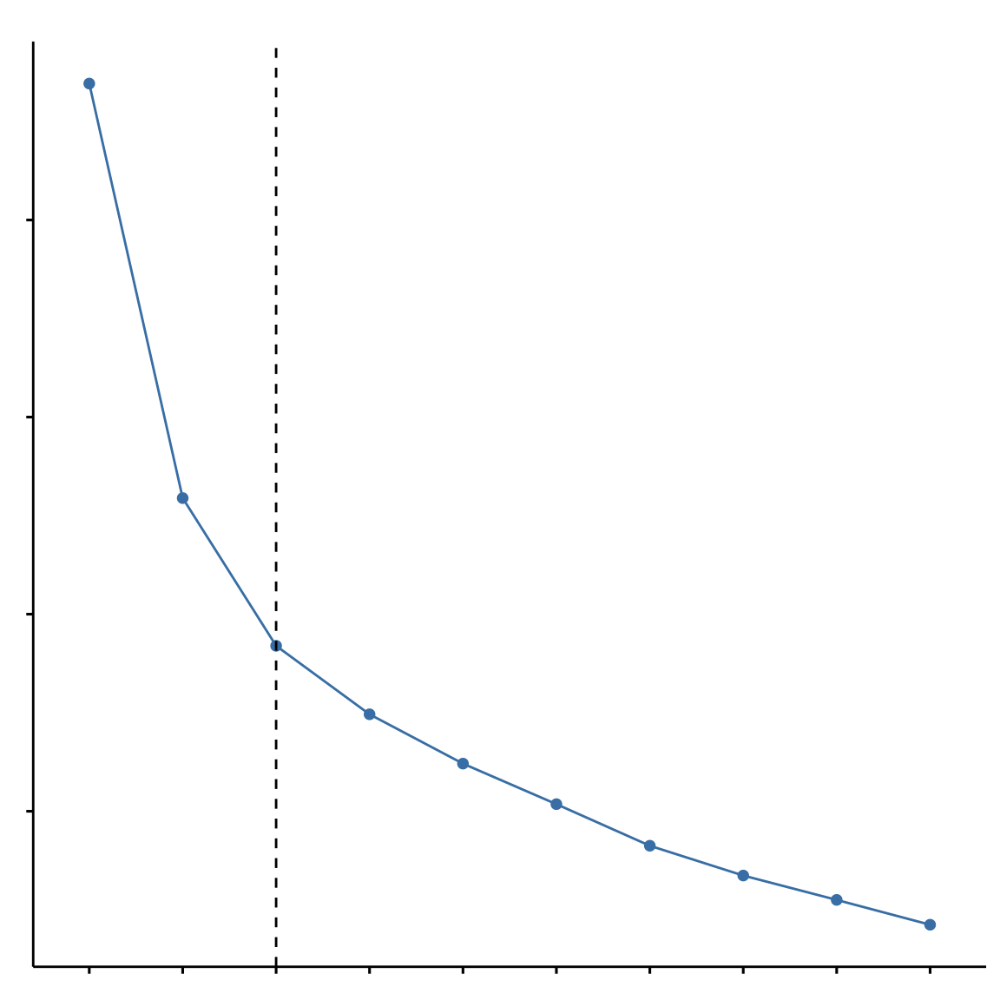

![]()
library(factoextra) # to visualize cluster
library(NbClust) # to visualize cluster fits
set.seed(10001) # to reproduce the results
data <- read_csv("data_main_replicate.csv") # download the dataThis post explains a data science project I have worked on. The complete analysis code is available on GitHub, but you can also find some code snippets in this post. A paper detailing the analysis is currently in the works. I presented a poster based on this work at the Atlanta VA on May 16, 2024.
More data, more problems
Ever heard the phrase “more money, more problems?” It is possible to have too much of a good thing. A similar idea exists for a data set: more data, more problems. Yes, having more data is better. Having more data points (e.g., cases, rows, observations) can increase the precision and generalizability of your analysis. But but having too many cases (e.g., rows, observations) takes a lot of computing power, memory, and energy to. Having too many variables or columns is also computationally expensive. For example, machine learning models face the “curse of dimensionality” where having lots of variables slows down models and makes them take lots of memory. Like too much memory to train a neural network on your laptop, or taking 16 hours to tune the hyperparameters for XGBoost. But too many variables can also challenge you conceptually. Which ones should you focus on? Or should you try to use them all?
I had this problem with some survey data I collected with military veterans. I wanted to learn about how joining the military becomes a part of people’s identities. It is important because veterans may feel they lose part of their identities when they leave the military; and they need to start a civilian career, live independently, and deal with military-connected health issues, including physical and psychological injuries. Understanding veterans identities can help businesses hire, retain, and create good work climates for veterans. Community groups can relate better to veterans find housing and make connections. And healthcare, social workers, and therapists can relate better.
Conveniently, there is a questionnaire to measure veteran’s military identity, the Warrior Identity Scale. It’s adapted from measures of ethnic and racial identity, which are widely used in cross-cultural psychology. The version of the Warrior Identity Scale I used actually measures 7 different aspects of identity.
These include “centrality” which measures the overall importance of identity to a person’s sense of self.
“Regard” refers to how highly valued you think your identity group is. Regard can be either “private” – your value of the group – or “public” - meaning your perception of how other people value your group.
“Connection” refers to how
“Interdependence” is similar to connection.
“Family” is to
“Skills” measure how much a person values the skills they learned in the military.
How are we supposed to make sense of the different ways that identity is measured?
Well we could just use centrality, which is the most general. Or we could use concepts and theory to think about their differences, then pick the one that suits us.
One such conceptualization is the A,B,Cs of psychology, Attitude, Behavior, and Cognition. Regard measures attitudes, connection, family, and interdependence measure behaviors, and centrality measures cognition.
Of course, having to pick and choose is it’s own problem: the garden of forking paths. Presented with so many options, which way do you choose? These analyst degrees of freedoms can
This is a problem to the extent that we randomly pick which identity variables to use. We would ideally choose what variables to use by referencing a theory.
The original authors and other study/ies? use all of these variables in a single regression model.
But how are they related? DAGs - Table 2 Fallacy
You need to be
The second option would be to select 1 or more of the identity variables. This is a problem to the extent that we arbitrarily pick which identity variables to include. We would ideally choose what variables to use by referencing a theory.
There is a third approach which is less dependent on theory and more data-driven: unsupervised learning to combine the 7 variables, reducing the 7 dimensions into 1. Unsupervised learning is a form of machine learning we can use to categorize data without having a “true” reference category. We are trying to uncover hidden patterns or “latent” groups.
A key issue with unsupervised learning is not having a ground truth to compare the model. No matter how good it fits the data you have, it is not possible to know if clusters corresponds to real groupings. In this project, I mitigated this issue by collecting an additional sample to see if the results would replicate.
Unsupervised Learning
Clustering analysis can be used to address the “curse of dimensionality.” It is one tool for “dimensional reduction,” reducing the number of variables you have. Take the following 2 dimensional plot. Can you use it to spot groups in the data, reducing our two-dimensions to a 1-dimension categorical variable?
While we cannot easily visualize past two or three dimensions, mathematically we can use the same unsupervised learning tools in as many dimensions as we want. Instead of using human eyes, unsupervised learning algorithms use math to find the clusters.
Let’s use one unsupervised learning tool to see if it can find the same 3 groups that we did. In R, we can do this with the kmeans() which is in base R’s stats package. We will work with the same penguin data and see if the k-means algorithm can find the species groups (note: with unsupervised learning, we typically wouldn’t try to spot groups that we already have labels for, like these penguin species in this toy data set):
Besides k-means, there are other unsupervised algorithms we can use. These are:
- Hierarchical Clustering
- DBSCAN
What unsupervised learning method is best for my problem?
k-means (or related “centroid-based” clustering methods) work best when:
1. Euclidean Distance. For k-means to work best, the measures are related to each other in Euclidean distance. That is, the distance between two points should be in a standard n-dimension space. Just like the distance between two houses, or between the earth and the moon. This would not apply to the distance between two nodes in a social network graph. In that case, the distance between nodes is not Euclidean but rather measured in degrees of Kevin Bacon separation.
A consequence of the Euclidean-distance-based algorithm is that the clusters found by k-means will be spherical. Just like planets in the orbit of the sun, the data points for each group will be spaced out around a center (the “mean” in k-means).
2. Known number of clusters. k-means is also best when you know the correct number of clusters. Most of the time, with unsupervised learning, we do not know the number of clusters.
Under the hood, the algorithm is trying to group the data to minimize within cluster variance. In other words, it tries to find the multidimensional distance from each data point to every other data point in its cluster.
One main issue with k-means is that it requires specifying how many clusters there are. In this case, we told k-means that there are 3 clusters, knowing that’s how many species are in the data. But truly unsupervised learning would not know the appropriate number of clusters. In these cases, it may be more appropriate to use.
But it is still possible to use k-means for unsupervised learning, only we need to try different numbers of clusters and then compare these solutions.
The more clusters chosen, the lower the variance, but having the number of clusters equal to the number of data points (k = n) does us no help in reducing dimensions. Ultimately, we have to choose which solution (i.e., number of clusters) to choose, and we need to balance parsimony with fit. When we already know how many clusters to choose, this is not a difficult problem. But when we have no idea how many clusters are appropriate, we compare how well the different solutions fit the data.
Hierarchical clustering provides a built-in solution to learning the best number of clusters.
DBSCAN, which stands for density-based spatial clustering of applications with noise, is best suited to data that have irregularly shaped clusters in a Euclidean space. In other words, things that are not groups shaped as spheres.
Clustering Military Identity Data
Let’s see how to compare different cluster solutions with the WIS veteran identity data that I told you about at the top of this post. Remember, there are 7 variables, and that’s too many. We need to reduce the number of dimensions with clustering.
Let me walk you through the R code for the analysis. First we will load some packages and set a seed number for the pseudo-random number generator. That will allow us to repeat the result. Finally, we will load the data. I’ve made this data set publicly available on GitHub. The code will allow you to download the data yourself and follow along.
Then we will standardize the data. Each variable used a standardized scale, so it is probably not a big deal for this data, but they do have different ranges, so let’s standardize it anyways to be safe.
data_cluster_wis <-
data %>%
select(starts_with('wis') & ends_with('total') & !wis_total) %>%
scale()Then we can use tools from the packages we loaded to compare different the number of clusters.
The first package is factoextra. It will calculate and visualize 3 different indices: the within sum of square, the silhouette index, and the gap statistic.
We will start with the within sum of squares, using something called the elbow method to assess the metric. The elbow method is a graphical technique. We look to see where there is an “elbow” in the graph – that is, where the line bends the most.
(plot_elbow <-
fviz_nbclust(data_cluster_wis, kmeans, method = "wss") + # fviz is built on ggplot2, so just add ggplot elements to it
geom_vline(xintercept = 3, linetype = 2) +
labs(
title = "The elbow method is a little ambiguous",
subtitle = "But 3 appears to be the elbow"
) +
theme_custom
)
The silhouette method is another technique that we can graph. Here we are looking for the greatest value.
(plot_silhouette <-
fviz_nbclust(data_cluster_wis, kmeans, method = "silhouette")+
labs(title = "The silouette method favors 2 clusters") +
theme_custom
)The gap statistic is yet another index.
(plot_gap_stat <-
fviz_nbclust(data_cluster_wis,
kmeans,
nstart = 25,
print.summary = TRUE,
method = "gap_stat",
nboot = 500) +
labs(title = "The gap stat can't find a solution with this data",
subtitle = "The greatest gap stat is for 1 cluster",
caption = "A 1-cluster solution isn't really a cluster") +
theme_custom
)The gap statistic was not very helpful. It suggests a 1-cluster solution, which isn’t really a cluster, now is it? Another way of thinking about this 1-cluster gap stat is an inability to reject the null hypothesis that the data clusters into groups at all.
The graphical methods are interesting. At least they give us something to look at. But there is another way to find the best number of clusters.
Using the NbClust package, we can compare lots of different cluster solutions with a suite of 30 different metrics.
In this case, let’s compare solutions from 2 to 15 groups.
results_kmeans <-
NbClust(data = data_cluster_wis,
diss = NULL,
distance = "euclidean",
min.nc = 2,
max.nc = 15,
method = 'kmeans',
index = 'alllong')*** : The Hubert index is a graphical method of determining the number of clusters.
In the plot of Hubert index, we seek a significant knee that corresponds to a
significant increase of the value of the measure i.e the significant peak in Hubert
index second differences plot.
*** : The D index is a graphical method of determining the number of clusters.
In the plot of D index, we seek a significant knee (the significant peak in Dindex
second differences plot) that corresponds to a significant increase of the value of
the measure.
*******************************************************************
* Among all indices:
* 11 proposed 2 as the best number of clusters
* 9 proposed 3 as the best number of clusters
* 1 proposed 4 as the best number of clusters
* 1 proposed 13 as the best number of clusters
* 2 proposed 14 as the best number of clusters
* 3 proposed 15 as the best number of clusters
***** Conclusion *****
* According to the majority rule, the best number of clusters is 2
******************************************************************* Going by those results, the 2-group and 3- group solution look the best. Let’s limit the number of clusters to compare head-to-head just those 2- and 3-group solutions. Actually, NbClust makes us compare at least three different solutions, so we will compare the 2-, 3-, and 4-group solutions.
results_kmeans_limited =
NbClust(data = data_cluster_wis,
diss = NULL,
distance = "euclidean",
min.nc = 2,
max.nc = 4,
method = 'kmeans',
index = 'alllong')*** : The Hubert index is a graphical method of determining the number of clusters.
In the plot of Hubert index, we seek a significant knee that corresponds to a
significant increase of the value of the measure i.e the significant peak in Hubert
index second differences plot.
*** : The D index is a graphical method of determining the number of clusters.
In the plot of D index, we seek a significant knee (the significant peak in Dindex
second differences plot) that corresponds to a significant increase of the value of
the measure.
*******************************************************************
* Among all indices:
* 13 proposed 2 as the best number of clusters
* 10 proposed 3 as the best number of clusters
* 4 proposed 4 as the best number of clusters
***** Conclusion *****
* According to the majority rule, the best number of clusters is 2
******************************************************************* Validating the Clusters
A key issue with unsupervised learning is how to externally validate the clusters. How do we know if these classifications are real or just an artifact of the data?
In supervised learning, validation is easier. You use the model to make some predictions on data it wasn’t trained on. Then you calculate how accurate the predictions were. With unsupervised learning, we have no idea how accurate we are. Instead, we need to validate the categories in different ways. In this project, I used two different validation methods.
First, the model should have some “predictive” validity. That is, the clusters should be able to predict other variables. For this project, veterans identity should predict how well they reintegrate into civilian society. Using the clusters as a predictor variable, I fit a linear regression model to a measure of reintegration.
Second, the cluster groupings should be replicable in other data sets. That is, if we collect new data, we should find similar groupings if the grouping are real. With this in mind, I collected some more data with a new survey. Then, I repeated the clustering in the new data set.
If we choose the 3-cluster solution, we can inspect the groups. Let’s plot the data and take a look.
plot_profiles <-
data %>%
mutate(wis_skills_total = wis_skills_total / 3,
wis_centrality_total = wis_centrality_total / 4,
wis_connection_total = wis_connection_total / 3,
wis_family_total = wis_family_total / 3,
wis_interdependent_total = wis_interdependent_total / 7,
wis_private_regard_total = wis_private_regard_total / 7,
wis_public_regard_total = wis_public_regard_total / 4) %>%
select(wis_skills_total,
wis_centrality_total,
wis_connection_total,
wis_family_total,
wis_interdependent_total,
wis_private_regard_total,
wis_public_regard_total,
cluster) %>%
group_by(cluster) %>%
mutate(cluster = factor(cluster)) %>%
summarise(across(everything(), ~ mean(.x))) %>%
pivot_longer(!cluster) %>%
ggplot(
aes(
name,
value,
color = cluster,
group = cluster)) +
geom_point(
aes(
shape = cluster),
size = 4) +
geom_line(
aes(
linetype = cluster)) +
scale_color_manual(values = c('#440154', '#3b528b', '#5ec962')) +
#scale_color_viridis(option = 'C', discrete = TRUE) +
theme_classic() +
labs(title = paste0('Military Identity by Latent Groups'),
x = 'Aspect of Military Identity',
y = 'Identity (mean item score)') +
theme(axis.text.x = element_text(angle = -30, vjust = 1, hjust = 0)) +
labs(color = 'Cluster',
shape = 'Cluster',
linetype = 'Cluster') +
scale_x_discrete(
labels = c('Centrality',
'Connection',
'Family',
'Interdependence',
'Private Regard',
'Public Regard',
'Skills')
) +
theme(axis.text = element_text(size = 11),
text = element_text(size = 14))